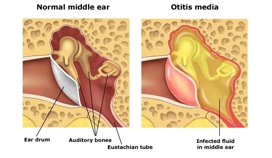
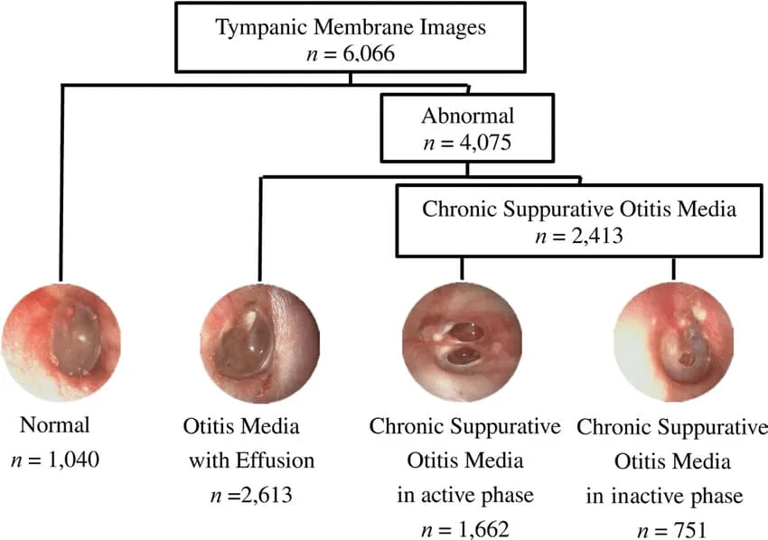
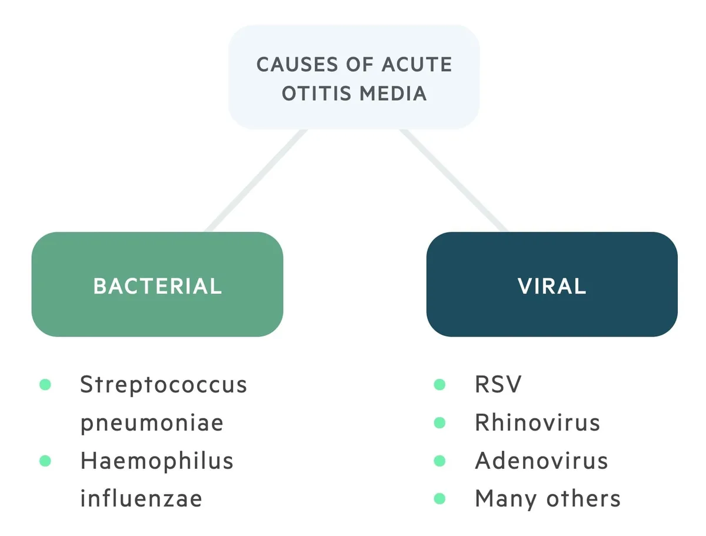
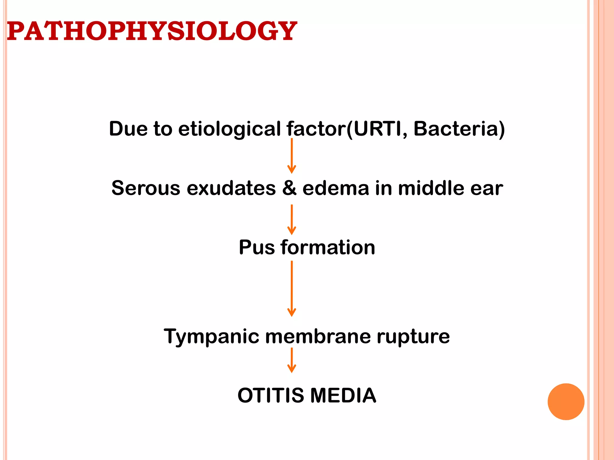
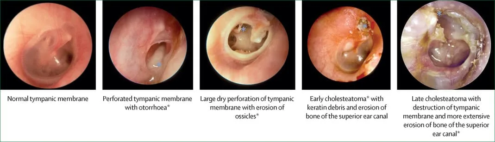
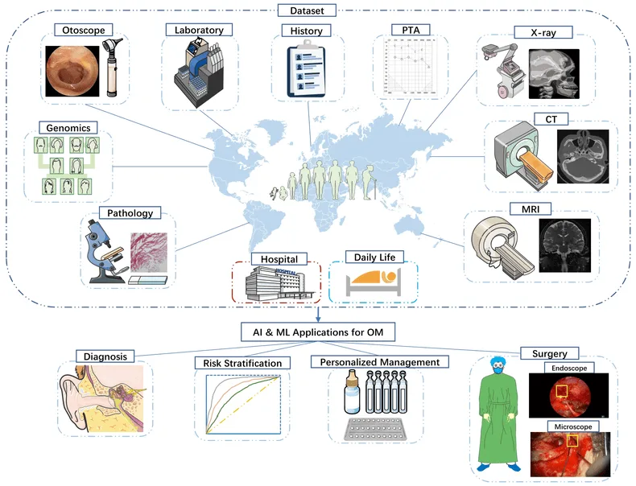
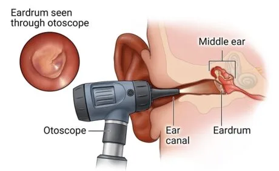

Expanded Nursing Uganda Explanation
Otitis Media should be understood beyond a short definition. Link the concept to patient history, focused assessment, common risks, nursing priorities, documentation and evaluation of outcomes.
01 Overview
Otitis Media (OM) is a broad term encompassing a group of inflammatory diseases of the middle ear.
The middle ear is an air-filled cavity located behind the eardrum (tympanic membrane) and contains the ossicles (malleus, incus, stapes), which transmit sound vibrations. It is connected to the nasopharynx by the Eustachian tube.
The different classifications of otitis media are crucial for understanding its pathology, clinical presentation, and management.
- Middle Ear Space: The air-filled cavity behind the tympanic membrane.
- Tympanic Membrane (Eardrum): Separates the external ear from the middle ear.
- Eustachian Tube: Connects the middle ear to the nasopharynx, responsible for ventilation, drainage, and pressure equalization of the middle ear. Dysfunction of this tube is central to the development of OM.
Otitis media is primarily classified based on the presence of effusion (fluid in the middle ear) and the duration and severity of symptoms.
- Acute Otitis Media (AOM): An acute inflammatory process of the middle ear, characterized by the rapid onset of signs and symptoms of middle ear inflammation and the presence of middle ear effusion (fluid). Key Features: Rapid Onset: Symptoms develop quickly, usually within hours to a few days.
- Middle Ear Effusion (MEE): Fluid behind the eardrum.
- Signs of Inflammation: Bulging of the tympanic membrane, limited or absent mobility of the tympanic membrane, redness of the tympanic membrane, and otalgia (ear pain).
- Systemic Symptoms: Fever, irritability, difficulty sleeping, decreased appetite, vomiting, or diarrhea are common, especially in infants and young children.
- Duration: Typically resolves within a few days to weeks.
- Otitis Media with Effusion (OME), also known as Serous Otitis Media: The presence of non-purulent (non-infected) fluid in the middle ear space without signs or symptoms of acute inflammation. Key Features: Middle Ear Effusion (MEE): Fluid is present behind the eardrum.
- Absence of Acute Inflammation: No fever, no significant ear pain, no bulging of the eardrum. The tympanic membrane may appear dull, retracted, or show fluid levels/bubbles.
- Silent Presentation: Often asymptomatic, but can cause hearing loss (conductive hearing loss) due to the fluid impairing sound transmission.
- Duration: Can persist for weeks or months after an episode of AOM, or can arise spontaneously due to Eustachian tube dysfunction.
- Significance: While not an active infection, persistent OME can lead to developmental delays, particularly speech and language, in young children due to chronic hearing impairment.
- Recurrent Acute Otitis Media (RAOM): Multiple episodes of AOM within a specific timeframe. Criteria: defined as: 3 or more distinct episodes of AOM in 6 months, OR
- 4 or more distinct episodes of AOM in 12 months, with at least one episode in the preceding 6 months.
- Significance: Indicates a predisposition to middle ear infections, often due to underlying Eustachian tube dysfunction, allergies, or immune factors, and may warrant further investigation or prophylactic measures.
- Chronic Suppurative Otitis Media (CSOM): Chronic inflammation of the middle ear and mastoid cavity, characterized by perforation of the tympanic membrane and persistent or recurrent otorrhea (ear discharge) through the perforation for at least 6 weeks. Key Features: Tympanic Membrane Perforation: A hole in the eardrum.
- Chronic Otorrhea: Persistent drainage from the ear.
- Absence of Acute Symptoms: Usually painless, without fever, unless there's an acute exacerbation.
- Hearing Loss: Conductive hearing loss is common.
- Significance: Represents a long-standing infection that can lead to significant hearing impairment and serious complications if untreated.
The development of Otitis Media (OM), particularly Acute Otitis Media (AOM) and Otitis Media with Effusion (OME), is primarily a result of a complex interplay between Eustachian tube dysfunction, microbial colonization, and host factors.
Otitis Media is most commonly triggered by a combination of viral and bacterial infections.
- Viral Infections (Primary Initiators): Common Viruses: Respiratory Syncytial Virus (RSV), Rhinovirus (common cold), Influenza virus, Adenovirus.
- Role: Viral upper respiratory tract infections (URTIs) are often the initial event. They cause inflammation of the nasal passages and nasopharynx, which then extends to the Eustachian tube. This inflammation leads to swelling and increased mucus production, contributing to Eustachian tube dysfunction. Viral infections can also directly impair local immune defenses, making the middle ear more susceptible to bacterial invasion.
- Bacterial Infections (Secondary Invaders): Common Bacteria: Streptococcus pneumoniae (Pneumococcus): The most common bacterial cause of AOM, accounting for about 25-50% of cases.
- Haemophilus influenzae (non-typeable): The second most common, responsible for 20-40% of cases.
- Moraxella catarrhalis: Accounts for 10-15% of cases.
- Streptococcus pyogenes (Group A Strep): Less common, but can cause more severe disease.
- Role: Following a viral URTI and subsequent Eustachian tube dysfunction, bacteria from the nasopharynx can ascend into the middle ear, where they proliferate in the compromised environment, leading to a full-blown bacterial infection.
- Other Contributing Factors: Allergies: Allergic inflammation of the nasal mucosa can also lead to Eustachian tube dysfunction.
- Anatomical Abnormalities: Cleft palate, Down syndrome, or other craniofacial anomalies can predispose individuals to OM due to compromised Eustachian tube function.
- Gastroesophageal Reflux Disease (GERD): Refluxed stomach contents can potentially irritate the Eustachian tube opening.
The key event in the pathogenesis of most forms of Otitis Media is Eustachian tube dysfunction .
- Eustachian Tube Dysfunction (ETD): Normal Function: The Eustachian tube normally opens periodically (during swallowing, yawning) to equalize pressure, ventilate the middle ear, and drain secretions into the nasopharynx.
- Impairment: Inflammation/Edema: Viral URTIs, allergies, or irritants cause inflammation and swelling of the Eustachian tube mucosa, leading to its blockage.
- Mechanical Obstruction: Enlarged adenoids (especially in children) can physically block the nasopharyngeal opening of the Eustachian tube.
- Consequence: When the Eustachian tube is blocked, the air in the middle ear is gradually absorbed by the surrounding tissues. This creates negative pressure (vacuum) within the middle ear cavity.
- Middle Ear Effusion (OME Development): Mechanism: The negative pressure in the middle ear causes fluid to be drawn from the mucosal lining (transudation) and promotes the secretion of fluid by the middle ear mucosa.
- Result: This fluid accumulation is Otitis Media with Effusion (OME) . At this stage, the fluid is typically sterile or non-purulent. Patients may experience a feeling of fullness in the ear and conductive hearing loss.
- Bacterial Colonization and Acute Otitis Media (AOM Development): Mechanism: The fluid-filled, negatively pressured middle ear provides an ideal breeding ground for bacteria. Bacteria and viruses from the nasopharynx, which are often present due to the preceding URTI, can easily ascend into the middle ear through the dysfunctional Eustachian tube.
- Result: The bacteria proliferate, leading to an acute inflammatory response: Increased Fluid Production: The infection leads to the production of purulent (pus-filled) fluid.
- Tympanic Membrane Changes: The tympanic membrane becomes inflamed, red, and bulges outward due to the pressure of the accumulating pus. Its mobility is reduced or absent.
- Pain (Otalgia): The pressure and inflammation within the middle ear cause significant ear pain.
- Systemic Symptoms: The infection triggers a systemic response, leading to fever, irritability, and general malaise.
- Factors Predisposing Children to OM: Anatomy of Eustachian Tube: In children, the Eustachian tube is shorter, more horizontal, and wider than in adults, making it easier for pathogens to ascend from the nasopharynx and for secretions to accumulate.
- Immature Immune System: Children's immune systems are still developing, making them more susceptible to infections.
- Adenoidal Hypertrophy: Enlarged adenoids are common in children and can directly obstruct the Eustachian tube.
- Daycare Attendance: Increased exposure to respiratory viruses.
- Exposure to Tobacco Smoke: Impairs ciliary function and increases inflammation.
- Lack of Breastfeeding: Breastfeeding provides antibodies that protect against infections.
The clinical presentation of otitis media, particularly Acute Otitis Media (AOM), can vary significantly depending on the patient's age. Infants and young children, who are most commonly affected, often present with non-specific symptoms, making diagnosis challenging.
- Otalgia (Ear Pain): Description: This is the hallmark symptom, often sudden in onset and ranging from mild to severe.
- In older children/adults: They can verbalize "my ear hurts."
- In infants/young children: May manifest as: Ear pulling, tugging, or rubbing: While often associated with ear pain, this can also be a non-specific sign and is not always indicative of AOM.
- Increased irritability/fussiness: Especially when lying down, which can increase middle ear pressure.
- Difficulty sleeping: Pain often worsens when supine.
- Unexplained crying.
- Fever: Common, especially in bacterial AOM. Can range from low-grade to high (e.g., >39°C or 102.2°F). NOTE that Absence of fever does not rule out AOM, particularly in viral cases or milder bacterial infections.
- Irritability and Restlessness: Non-specific but common, reflecting general discomfort and pain.
- Difficulty Sleeping: Pain often intensifies when lying flat due to increased middle ear pressure.
- Decreased Appetite / Feeding Difficulties: Swallowing can increase middle ear pressure, exacerbating pain. Sucking (e.g., from a bottle or breast) can also cause pain.
- Vomiting and Diarrhea: More common in younger children, often accompanying systemic infections.
- Muffled Hearing / Hearing Loss: Due to fluid in the middle ear, sound conduction is impaired. Older children may complain of this, while in younger children, it may be noticed as decreased responsiveness to sound.
- Otorrhea (Ear Discharge): If the tympanic membrane perforates, pus may drain from the ear canal. This often leads to immediate pain relief, as the pressure in the middle ear is released. The discharge can be purulent or bloody.
The definitive diagnosis of AOM relies on visual inspection of the tympanic membrane (eardrum) using an otoscope.
- Bulging of the Tympanic Membrane (TM): The most reliable sign of AOM. The eardrum bows outward due to the pressure of fluid/pus behind it.
- Erythema (Redness) of the TM: Indicates inflammation. The TM may appear diffusely red.
- Limited or Absent Mobility of the TM: Assessed with pneumatic otoscopy (puff of air). A healthy TM moves in response to pressure changes; an inflamed or fluid-filled TM will show reduced or no movement.
- Clouding / Opacity of the TM: The eardrum loses its normal translucent appearance and appears opaque.
- Loss of Landmarks: The normal anatomical landmarks (e.g., malleus, cone of light) become obscured due to bulging and inflammation.
- Otorrhea (if perforation occurred): Purulent discharge in the ear canal, often obscuring the view of the TM. A perforation may be visible.
- Asymptomatic: Often, children with OME do not have acute symptoms of pain or fever. It may be an incidental finding.
- Hearing Loss: The most common symptom. Parents may notice: Child not responding to quiet sounds.
- Increased volume on TV/radio.
- Difficulty with speech development or articulation.
- Inattentiveness.
- Aural Fullness or Popping: Older children/adults may describe a feeling of pressure or "plugged ear."
- Otoscopic Findings for OME: Dull, Opaque, or Retracted TM: The eardrum may appear pulled inward.
- Fluid Level or Air Bubbles: May be visible behind the TM.
- Limited Mobility: Pneumatic otoscopy will show reduced mobility of the TM, but without the acute signs of inflammation (no bulging or significant erythema).
- Chronic Otorrhea: Persistent or intermittent ear discharge (often mucoid or purulent) through a tympanic membrane perforation, lasting usually for more than 6 weeks.
- Painless: Often no acute ear pain or fever, unless an acute exacerbation occurs.
- Conductive Hearing Loss: Due to the perforation and changes in the middle ear.
- Otoscopic Findings for CSOM: Tympanic Membrane Perforation: A visible hole in the eardrum.
- Mucosal Edema/Granulations: The middle ear mucosa may appear swollen or have granulation tissue.
- Discharge: Present in the ear canal, potentially obscuring the view of the middle ear.
The accurate diagnosis of Otitis Media (OM), particularly Acute Otitis Media (AOM), relies primarily on a thorough clinical history and a careful physical examination using specialized tools. For AOM, the key is to identify middle ear effusion AND signs of acute inflammation.
A detailed history is crucial and should include:
- Onset and Duration of Symptoms: Rapid onset is key for AOM.
- Specific Symptoms: Presence of ear pain (otalgia) and its characteristics.
- Fever, irritability, difficulty sleeping, decreased appetite, fussiness.
- Ear pulling/tugging (especially in infants).
- Recent or current upper respiratory tract infection (URTI) symptoms (cough, runny nose, congestion).
- Changes in hearing or speech development (for OME).
- Presence of ear discharge (otorrhea).
- Risk Factors: Daycare attendance, exposure to tobacco smoke, history of recurrent AOM, allergies, feeding practices.
- Previous Episodes: Number and frequency of prior OM episodes, and treatments received.
- Otoscopy: This is the most important diagnostic tool. A skilled examiner uses an otoscope to visualize the tympanic membrane (TM). Proper Technique: Stabilize the head (especially in children).
- Gently pull the auricle (pinna) up and back in adults, or down and back in children, to straighten the ear canal.
- Insert the speculum carefully to visualize the TM.
- Key Observations for AOM: Bulging of the TM: This is the most specific sign of AOM. The TM bows outwards due to pressure from the middle ear fluid.
- Erythema (Redness) of the TM: Indicates inflammation. Note that crying can also cause redness, so it must be evaluated in context.
- Opacity of the TM: The TM loses its normal translucent appearance and becomes cloudy or dull.
- Loss of Landmarks: Normal anatomical structures like the cone of light and the malleus handle become obscured.
- Key Observations for OME: TM is usually not red or bulging.
- Dull, opaque, or retracted TM.
- Fluid levels or air bubbles behind the TM may be visible.
- Key Observations for CSOM: Perforation of the TM.
- Otorrhea (purulent discharge) from the perforation.
- Middle ear mucosa may appear edematous or granulated.
- Pneumatic Otoscopy: This technique is critical for assessing the mobility of the tympanic membrane. Method: A special otoscope head with an air bulb attached allows the clinician to introduce positive and negative pressure into the external ear canal.
- Interpretation: Normal TM: Moves inward with positive pressure and outward with negative pressure.
- TM with AOM: Shows absent or severely diminished mobility due to the pressure of fluid/pus behind it.
- TM with OME: Shows diminished mobility (often retracted) but without the acute inflammatory signs of AOM.
- Perforated TM: No movement with pressure changes.
- Significance: Pneumatic otoscopy is considered more reliable than visual inspection alone, especially for distinguishing AOM from OME or a normal ear.
These tests are not typically used for routine diagnosis of AOM but can be valuable in specific situations, especially for OME or when otoscopy is difficult.
- Tympanometry: Method: An objective test that measures the compliance (mobility) of the tympanic membrane and the air pressure in the middle ear. A probe is placed snugly in the ear canal.
- Interpretation: Type A Tympanogram (Normal): Peak compliance at or near 0 daPa, indicating a healthy, mobile TM and normal middle ear pressure.
- Type B Tympanogram (Flat): No peak, indicating severely reduced or absent TM mobility, consistent with fluid in the middle ear (OME or AOM) or a perforated TM.
- Type C Tympanogram: Peak compliance shifted to negative pressure (e.g., < -150 daPa), indicating significant negative pressure in the middle ear, often associated with Eustachian tube dysfunction and sometimes preceding OME.
- Significance: Useful for confirming the presence of middle ear effusion when pneumatic otoscopy is equivocal or difficult. It cannot distinguish between AOM and OME on its own but can confirm effusion.
- Acoustic Reflectometry: Method: Measures the reflection of sound waves off the eardrum. Fluid in the middle ear changes the acoustic impedance, leading to a different reflection pattern.
- Significance: Can be used as a screening tool, but less precise than tympanometry or pneumatic otoscopy. Not widely used clinically for definitive diagnosis.
- Cultures: Middle Ear Fluid Culture: Obtained via tympanocentesis (puncture of the TM to aspirate fluid).
- Indications: Reserved for severe cases, immunocompromised patients, treatment failure, or when an unusual organism is suspected. Not routine.
- Ear Canal Discharge Culture: For CSOM, to identify causative organisms and guide antibiotic choice.
According to major medical guidelines (e.g., American Academy of Pediatrics), the diagnosis of AOM requires:
- Rapid onset of signs and symptoms.
- Presence of middle ear effusion (MEE) , as indicated by: Bulging of the tympanic membrane.
- Limited or absent mobility of the TM (pneumatic otoscopy).
- Air-fluid level behind the TM.
- Otorrhea.
- Signs and symptoms of middle ear inflammation , as indicated by: Distinct erythema (redness) of the TM.
- Distinct otalgia (ear pain) that interferes with activity or sleep.
When a patient presents with symptoms suggestive of ear problems, particularly ear pain, fussiness, or hearing concerns, it's crucial to consider conditions other than Otitis Media.
- Otitis Externa (Swimmer's Ear): Inflammation or infection of the external ear canal. Distinguishing Features: Pain aggravated by manipulation of the tragus or auricle.
- Often associated with water exposure, trauma, or foreign body.
- Ear canal may be swollen, red, and have discharge.
- Tympanic membrane is typically normal unless the infection is severe enough to obscure the view.
- No systemic symptoms like fever unless severe.
- Foreign Body in the Ear Canal: Objects (beads, insects, cotton) lodged in the ear canal. Distinguishing Features: Sudden onset of pain, irritation, or hearing loss.
- Visible foreign body on otoscopy.
- No signs of middle ear infection (TM normal unless injured by foreign body).
- Impacted Cerumen (Earwax): Excessive earwax blocking the ear canal. Distinguishing Features: Gradual onset of hearing loss or a feeling of fullness.
- No pain unless the wax is pushing against the eardrum or causing irritation.
- Visible impacted cerumen on otoscopy, often completely obscuring the TM.
- Trauma to the Ear Canal or Tympanic Membrane: Injury from cotton swabs, foreign objects, or slaps to the ear. Distinguishing Features: Clear history of trauma.
- Pain, bleeding, or possible TM perforation.
Pain can be referred to the ear from various structures innervated by cranial nerves that also supply the ear (CN V, VII, IX, X) and cervical nerves. This is particularly important when otoscopy is normal.
- Dental Problems: Toothache, dental abscess, temporomandibular joint (TMJ) dysfunction. Distinguishing Features: Pain aggravated by chewing or jaw movement.
- Evidence of dental pathology (caries, gum inflammation).
- Normal otoscopy.
- Pharyngitis/Tonsillitis: Sore throat, inflammation of the tonsils or pharynx. Distinguishing Features: Prominent sore throat, pain with swallowing.
- Red, inflamed pharynx/tonsils (possibly exudate).
- Normal otoscopy.
- Parotitis (e.g., Mumps): Inflammation of the parotid gland. Distinguishing Features: Swelling and tenderness in the preauricular or submandibular area.
- Pain with eating or jaw movement.
- Normal otoscopy.
- Temporomandibular Joint (TMJ) Dysfunction: Pain or dysfunction of the jaw joint. Distinguishing Features: Pain with chewing, jaw movement, or clenching.
- Clicking or popping sensation in the jaw.
- Tenderness over the TMJ.
- Normal otoscopy.
- Cervical Lymphadenitis: Swollen, tender lymph nodes in the neck. Distinguishing Features: Palpable, tender lymph nodes.
- Pain may radiate to the ear.
- Normal otoscopy.
- Mastoiditis: Inflammation/infection of the mastoid bone (a complication of OM, but can be a differential in its early stages). Distinguishing Features: Postauricular pain, tenderness, and swelling.
- Protrusion of the auricle.
- Usually accompanied by signs of AOM.
- Upper Respiratory Tract Infection (URTI) / Common Cold: Viral infection causing nasal congestion, cough, sore throat. Distinguishing Features: Often precedes OM.
- May cause transient ear fullness or mild discomfort due to Eustachian tube inflammation, but without signs of middle ear effusion or acute inflammation on otoscopy.
- Teething (in infants): Eruption of primary teeth. Distinguishing Features: Fussiness, drooling, gnawing on objects.
- Red, swollen gums.
- Normal otoscopy.
The management of Otitis Media (OM) is tailored to the specific type of OM, the severity of symptoms, the age of the patient, and the presence of any complications or recurrent episodes. The primary goals are to alleviate pain, eradicate infection, prevent complications, and preserve hearing.
The approach to AOM involves a balance between antibiotic use and symptomatic relief, often incorporating a "watchful waiting" approach in specific scenarios.
- Pain Management: First-line: Acetaminophen (paracetamol) or Ibuprofen are crucial for pain and fever relief.
- Rationale: Even if antibiotics are prescribed, pain relief is immediate and vital for patient comfort.
- Intervention: Advise parents to administer pain medication promptly.
- Antibiotic Therapy: General Principle: While AOM is often bacterial, many cases resolve spontaneously, especially in older children. However, antibiotics are indicated in specific situations.
- Indications for Immediate Antibiotics: Children < 6 months of age. (High risk of complications)
- Children 6 months to 2 years with definite AOM. (Higher risk of complications, difficulty in assessing symptoms)
- Children > 2 years with definite AOM and severe symptoms (e.g., moderate-to-severe otalgia, otalgia for at least 48 hours, or temperature ≥39°C [102.2°F]).
- AOM with otorrhea (ear discharge).
- Immunocompromised patients or those with underlying conditions.
- "Watchful Waiting" (Observation) Option: Indications: May be offered to children aged 6 months to 2 years with unilateral AOM and non-severe symptoms (mild otalgia, temperature <39°C), OR children ≥ 2 years with unilateral or bilateral AOM and non-severe symptoms.
- Mechanism: Pain control is initiated, and parents are instructed to return or start antibiotics if symptoms do not improve within 48-72 hours or worsen.
- Rationale: Reduces unnecessary antibiotic use, which contributes to antibiotic resistance.
- First-Line Antibiotics: Amoxicillin: High-dose (80-90 mg/kg/day divided twice daily) is the drug of choice for most uncomplicated AOM, covering S. pneumoniae and H. influenzae .
- Amoxicillin-Clavulanate (Augmentin): Used if the child has received amoxicillin in the past 30 days, has concurrent conjunctivitis, or if there's suspicion of beta-lactamase-producing bacteria (e.g., resistant H. influenzae or M. catarrhalis ).
- Alternative for Penicillin Allergy: Cefdinir, Cefuroxime, Cefpodoxime, Ceftriaxone (IM/IV), or Azithromycin (less effective against S. pneumoniae ).
- Duration of Therapy: Children < 2 years: 10 days.
- Children 2-5 years: 7 days.
- Children ≥ 6 years: 5-7 days.
- Severe AOM in any age: 10 days.
- Follow-up: After Watchful Waiting: If symptoms persist or worsen, antibiotics should be started.
- After Antibiotics: A follow-up visit is often recommended, especially for young children or those with recurrent AOM, to ensure resolution of symptoms and middle ear effusion.
OME typically does not require antibiotics unless it progresses to AOM, as it is generally sterile fluid.
- Watchful Waiting: Principle: Most OME resolves spontaneously within 3 months.
- Intervention: Monitor for hearing loss and speech development.
- Rationale: Avoids unnecessary medical intervention.
- Hearing Assessment: Indication: If OME persists for 3 months or longer, a hearing test should be performed, especially in children with speech, language, or learning concerns.
- Intervention: Audiology referral.
- Antibiotic Prophylaxis: Principle: Low-dose daily antibiotics to prevent recurrent infections.
- Indications: Controversial and generally discouraged due to concerns about antibiotic resistance, but may be considered in specific cases where benefits outweigh risks and tubes are not an option.
- Intervention: Daily low-dose amoxicillin or sulfamethoxazole-trimethoprim.
- Adenoidectomy: Principle: Removal of enlarged adenoids, which can obstruct the Eustachian tube.
- Indications: May be considered for children with RAOM or OME who also have adenoidal hypertrophy and persistent symptoms despite other interventions. Often performed concurrently with tube insertion.
Surgical interventions are typically reserved for cases of recurrent AOM, persistent OME causing hearing loss, or chronic forms of OM that do not respond to medical management.
- Grommets (Tympanostomy Tubes): Tiny tubes inserted through the eardrum to help drain fluid and equalize pressure. Indications: Recurrent AOM (e.g., 3 episodes in 6 months or 4 in 12 months with OME present), persistent OME (≥ 3 months) with documented hearing loss or developmental concerns, AOM in children with structural abnormalities (e.g., cleft palate).
- Nursing Considerations (Post-Grommet Insertion): Water Precautions: Emphasize strict avoidance of water entering the ear canal (e.g., during bathing, swimming). Use earplugs or headbands as advised by the surgeon. This prevents bacteria from entering the middle ear through the tube.
- Monitor for Otorrhea: Watch for any drainage from the ear, which could indicate a tube blockage or infection. Report persistent or purulent drainage.
- Pain Management: Administer prescribed analgesics, though post-operative pain is usually mild.
- Hearing Assessment: Reassure parents that hearing should improve immediately.
- Educate Family: Provide clear instructions on tube care, signs of complications, and when to seek medical attention.
02 Nursing Uganda Clinical Lens
Use Otitis Media as a practical nursing topic, not only a memorized definition. Prioritize airway, breathing, circulation, pain, asepsis, wound healing and early complication detection.
- What to understand first: define otitis media, identify the normal or expected pattern, then explain what changes when the patient is unwell.
- Why it matters in care: the nurse must recognize risk early, explain findings clearly, document accurately and know when to escalate.
- How to revise it: connect each point to assessment, nursing diagnosis or care problem, intervention, rationale and evaluation.
03 Assessment Guide
- Vital signs, pain, bleeding, perfusion, level of consciousness and injury pattern.
- Wound appearance, drainage, odour, swelling, temperature and surrounding skin.
- Fluid balance, mobility, nutrition, surgical site risk and ordered investigations.
04 Nursing Priorities, Rationales and Outcomes
- Stabilize urgent problems first, then prepare for investigations or theatre care.
- Maintain aseptic technique, pain control, wound care and documentation.
- Prevent shock, infection, pressure injury, deep vein thrombosis and delayed healing.
The rationale for these priorities is patient safety: nursing actions should prevent deterioration, reduce discomfort, support recovery and create clear evidence for the next caregiver.
- Expected outcome: The patient remains stable, wound healing progresses, pain is controlled and complications are recognized early.
05 Patient Teaching and Revision Check
- Explain otitis media in simple language the patient or caregiver can repeat back.
- Teach warning signs, medicine or follow-up instructions, hygiene or lifestyle points where relevant.
- For exams, prepare a short answer using: definition, causes or risk factors, signs, assessment, management, complications and prevention.
- For ward practice, document baseline findings, actions taken, patient response and the plan for review.
Illustrations and Diagrams (17)








9 more diagrams available, open the lesson for full illustrations.
Related Video Lectures
Watch nursing lecture videos on YouTube for this topic. Opens in a new tab.
Watch on YouTubeExternal link: YouTube may use its own cookies and terms. Nursing Uganda is not affiliated with YouTube.